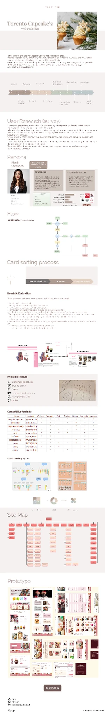

Overview
Toronto Cupcake is an e-commerce bakery specializing in custom cupcakes. While the product is loved, the website made finding and ordering cupcakes harder than it needed to be. This project set out to improve navigation and product discovery so customers can move from craving to checkout with minimal friction.
Process
- 01
User Research
Analyzed customer reviews, support queries, and site analytics to locate friction points in discovery and checkout.
- 02
Personas
Defined primary personas: the occasion planner, the gift buyer, and the returning flavor loyalist.
- 03
Information Architecture
Reorganized categories by occasion, flavor, and dietary needs using card-sorting insights mapped in Miro.
- 04
Wireframes
Low-fidelity wireframes for the category grid, product detail, and a simplified cart flow.
- 05
Prototype
Built a clickable mid-fidelity prototype in Figma covering the full ordering journey.
- 06
Usability Testing
Five moderated task-based sessions validated the new IA; iteration focused on filters and clearer add-to-cart feedback.